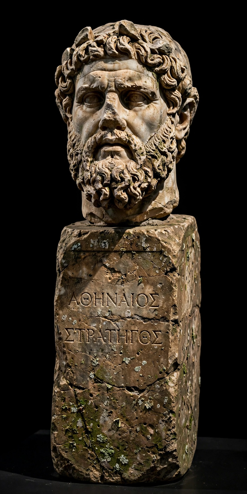

Nicias (Greek: Νικίας; c. 470 – 413 BC), son of Niceratus, was an Athenian politician and general during the period of the Peloponnesian War. One of the wealthiest men in Athens, he made his reputation as a cautious and successful commander and as a leading opponent of the aggressive policies of Alcibiades. He gave his name to the Peace of Nicias (421 BC), the truce that interrupted the war for several years. Appointed, against his own advice, to command the great Athenian expedition against Syracuse in 415 BC, he perished with his army when the expedition ended in catastrophe in 413 BC.
| Nicias | |
|---|---|
 A herm bust identified with Nicias. | |
| Born | c. 470 BC, Athens |
| Died | 413 BC, Syracuse, Sicily |
| Allegiance | Athens |
| Rank | Strategos (general) |
| Battles | Peloponnesian War; Sicilian Expedition |
Nicias inherited great wealth from silver mines at Laurium, worked by a thousand slaves whom he leased out, and spent lavishly on public religious duties, earning a reputation for piety and generosity. Elected strategos repeatedly from the 420s, he conducted successful operations against Minoa, Cythera, and in Thrace, and after the death of Cleon at Amphipolis he negotiated the peace of 421 BC that bears his name, ending the first phase of the Peloponnesian War.
In 415 BC the assembly voted to send a massive expedition to Sicily. Nicias, who had opposed the venture and argued for a huge force in the hope of deterring the assembly, was elected to command it alongside Alcibiades and Lamachus. After Alcibiades was recalled to face trial, Nicias's caution came to dominate the campaign: delays before Syracuse allowed the Syracusans, aided by a Spartan force under Gylippus, to fortify against the siege. Athenian reinforcements under Demosthenes arrived in 413 BC and urged immediate withdrawal after a failed night attack, but Nicias delayed — partly, Thucydides reports, because a lunar eclipse on 27 August 413 BC frightened the army and its seers demanded a wait of twenty-seven days. The Syracusans sealed the harbour and destroyed the Athenian fleet; the army's retreat ended at the Assinarus river, where thousands were killed or captured. Nicias surrendered and was executed by the Syracusans, contrary to Gylippus's wishes.
Thucydides famously judged that of all the Greeks of his time Nicias "least deserved" his fate, because his whole life had been ordered toward virtue; Plutarch wrote his biography, pairing him with Crassus. Modern historians are more critical of his superstition and indecision in Sicily, while recognising his genuine ability and integrity in Athenian politics.